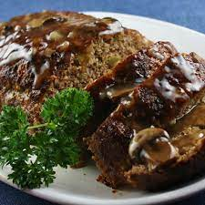

Tennessee Meatloaf

Description
Time Required
- prep: 40 minutes
- cook: 1 hour
- Additional: 15 minites
- Total: 1 hour 55 minites
Ingredients
Brown Sugar Glaze:
- half a cup of ketchup
- quarter cup of brown sugar
- 2 tablespoons cider vinegar
Meatloaf
- cooked spray
- 1 chopped onion
- half green bell pepper,chopped
- 2 cloves garlic, minced
- 2 large eggs, lightly beaten
- 1 teaspoon dried thyme
- 1 teaspoon seasoned salt
- ½ teaspoon ground black pepper
- 2 teaspoons prepared mustard
- 2 teaspoons Worcestershire sauce
- ½ teaspoon hot pepper sauce (such as Tabasco®)
- ½ cup milk
- ⅔ cup quick cooking oats
- 1 pound ground beef
- ½ pound ground pork
- ½ pound ground veal
Back to home